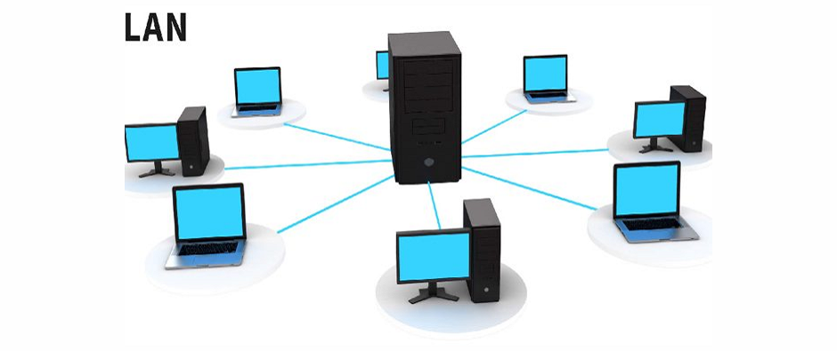

Pengertian LAN: Tujuan, Fungsi, Komponen, dan Cara Membangun

Pada dasarnya LAN memiliki fungsi utama untuk menghubungkan beberapa komputer dalam suatu jaringan yang akan membuat proses kerja menjadi lebih cepat dan mudah. Jaringan LAN mempunyai beberapa fungsi atau kegunaan tertentu. Berikut ini adalah fungsi sebuah jaringan LAN, di antaranya:
1. Menghubungkan dua komputer atau bahkan lebih
Jaringan LAN dimanfaatkan untuk menghubungkan dua komputer atau lebih. Baik secara langsung ataupun dengan menggunakan media perantara. Dua komputer bisa dihubungkan langsung dengan menggunakan kabel UTP yang tersambung pada kedua komputer. Sementara itu jika ingin menggabungkan lebih banyak komputer, kita perlu membutuhkan perangkat lain seperti contohnya Switch atau juga Hub.
2. Berfungsi untuk memindahkan file dari satu komputer ke komputer lain
Saat kita menggunakan jaringan LAN, kita tidak perlu repot-repot bolak balik memasukan flash disk dari komputer satu ke komputer lainnya. Dengan menggunakan jaringan LAN kita bisa dengan mudah melakukan pemindahan data melalui metode sharing pada komputer milik kita.